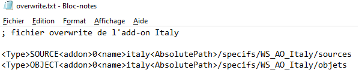
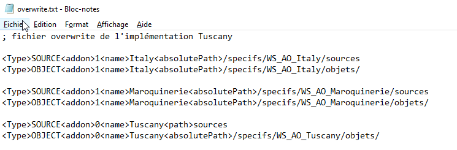

Ce fichier à trois rôles :
Il indique à Harmony que le mode "Surcharges
Multiples" est activé,
c'est à dire que les ZonesU deviennent extensibles et qu'il est possible
d'avoir plusieurs surcharges sur un même dictionnaire de données.
Il indique où se trouvent les fichiers sources
et objets de chaque add-on.
Attention :
- Habituellement, les fichiers de surcharge sont recherchés par les
chemins implicites.
- En mode Surcharges Multiples ce n'est plus le cas. Les
fichiers de surcharge sont uniquement cherchés à partir des chemins
trouvés dans le fichier overwrite.txt
Il indique l'ordre d'utilisation des add-ons.
Description du fichier
Pour chaque add-on, il faut une ligne de type SOURCE et une ligne de type OBJET
Les différents paramètres sont :
| Type | Source
: répertoire où se trouvent les sources de l'add-on Object : répertoire où se trouvent les objets de l'add-on |
| Name | Nom de l'add-on |
| Path | Chemin relatif par rapport au fichier overwrite.txt du répertoire (source ou objet selon le type). Paramètre inutilisé dans la pratique. |
| AbsolutePath | Chemin absolu du répertoire (source ou objet selon le type) |
Remarques
Il
est obligatoire que les chemins spécifiés ici soient écrits de la
même manière que dans le fichier des implicites.
Il ne faut pas avoir : c:/divalto/specifs/WS_AO_Italy/objets dans les
implicites et
/specifs/WS_AO_Italy/sources
dans le fichier overwrite.txt
Tous les sources d'un add-on ne sont pas forcément livrés par l'éditeur de l'add-on. Il est néanmoins impératif que les sources des dictionnaires de données (.dhsd) soient livrés.
Exemples
1 - Add-on Italy
Remarquez que le développeur qui écrit l'add-on Italy ne positionne pas <addon> à 1. <addon> est positionné uniquement lorsque il y a plusieurs niveaux.

2 - Tuscany
Ici, l'intégrateur utilise deux add-ons et, en plus, fait une surcharge.

Lors de la synchronisation du schéma SQL, le fichier overwrite sera recopié dans le répertoire de la base de données. Il permet à XlanSql d'avoir les bons dictionnaires en ligne.